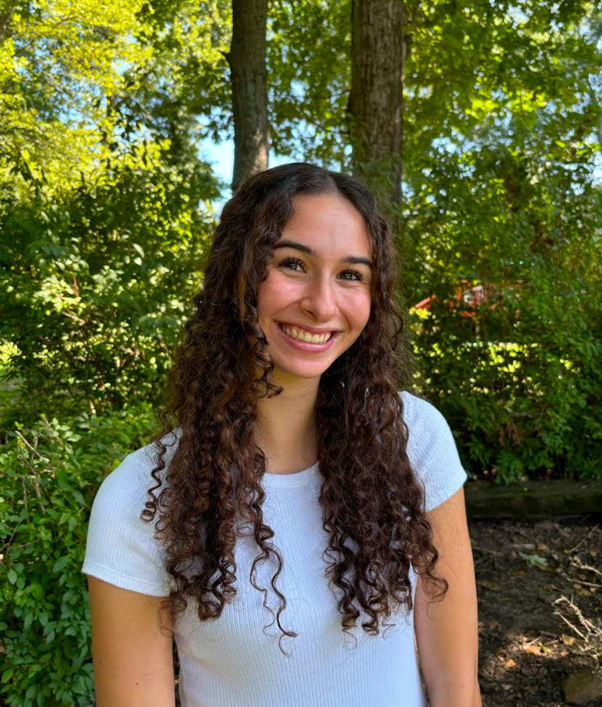

Student Journalist
I searched for newsworthy topics and events that would cater to an audience, and used newsgathering and interview skills to obtain information significant to the article. I collaborated with my editors to enhance the articles and worked with feedback on potential edits. I covered breaking news stories, campus news and longer form stories.
As the communications intern, I formulated social media content, such as Instagram posts and reels, to convey information about sustainability events and resources on campus, while making sure the content is interesting and engaging to the audience. I also wrote articles about sustainability projects and events on campus, such as the restoration of the UMD golf course and advancements in an on campus lab, to connect the audience with sustainability on campus. Finally, I designed a newsletter of events and noteworthy topics to be sent to 9,000 students, faculty and staff.
I wrote articles and took photographs for a local newspaper to inform readers about local events and issues, covering events such as board of education meetings, charity events, pride, concerts, etc. I formulated interesting questions to get interviewees thinking and to obtain unique perspectives, and used unique story angles to differentiate articles from those of the past or other publications.